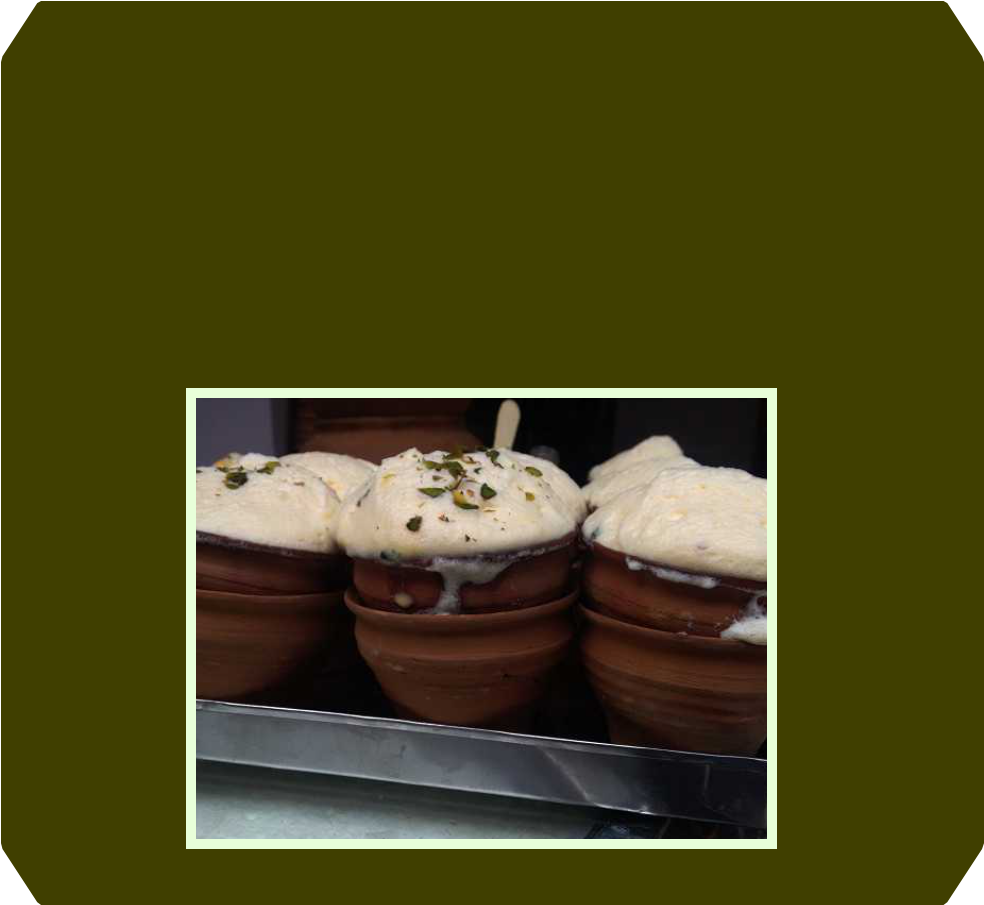

Designed by Lê Nguyễn Thanh Trúc
Design of Online Educational Resources. Instructor: Nguyễn Ngọc Vũ, Ph.D
Copyright © 2017. All rights reserved.


HISTORY AND FOOD
Some of India's foods date back five thousand years. The Indus Valley
peoples (who settled in what is now northern Pakistan) hunted turtles
and alligator, as well as wild grains, herbs and plants. Many foods
from the Indus period (c. 3000–1500 B.C.) remain common today.
Some include wheat, barley, rice, tamarind, eggplant and cucumber.
The Indus Valley peoples cooked with oils, ginger, salt, green
peppers, and turmeric root, which would be dried and ground into an
orange powder .
The Aryan-speaking peoples who entered India between 1500 and
1000 B.C used leafy vegetables, lentils, and milk products such as
yogurt and ghee (clarified butter). The Aryans also used spices such
as cumin and coriander. Black pepper was widely used by 400 A.D.
The Greeks brought saffron, while the Chinese introduced tea. The
Portuguese and British made red chili, potato and cauliflower popular
after 1700 A.D.
Perhaps the biggest contributors to India's culinary heritage are the
Muslim peoples from Persia and present-day Turkey, who began
arriving in India after 1200.
These peoples, known later as the Mughals, ruled much of India
between 1500 and early 1800. They saw food as an art, and many
Mughal dishes are cooked with as many as twenty-five spices, as well
as rose water, cashews, raisins and almonds.
MUMBAI
Every foodista’s paradise, Aamchi Mumbai! Dig into the best Bombil Fry,
sandwiches, falooda, Frankies, the yummy Modaks and a delectable
spread of sea food. Who can ignore the bhel puri and sev puri, which
have come to be a facet of Mumbai itself! Gujarati, Maharastrian and
Parsee influence couple up to rock every foodie’s world here. Enjoy the
food as it comes and have a lot of fun.

BANARAS
Be it the sumptuous spread of various kinds of chaat, the ghee-dripping
baati or the foamy, creamy goodness of the malaiyo, Banaras has
something to delight every foodista! The Malaiyo, a winter speciality of
Banaras, is prepared by leaving flavoured milk out for being tempered by
the morning dew. Chowk, Godowlia, is your destination for this rich,
Subah-e-Banaras experience. For the non-veg enthusiats out there, do
not miss the Chicken Tikka and Achari Murgh at Hotel Lallan,
Madanpura. The steamy, buttery delight of the coal-roasted meat is an
affair to remember.
DELHI
This one is an absolute stunner. Be it Nahari or Haleem during Ramadan,
be it the rich, succulent kababs and parathas in Old Delhi, be it the
awesome Chole Bhature, or simply the golgappas, Delhi has something
for every food lover. Having been home to people from all walks of life,
Delhi stands in a class of it’s own – local food-wise! We assure you,
you’ll run out of money AND space in your stomach if you get to
exploring Delhi food in its entirety!